25,000 m² of shaded circulation, courtyard gardens and calm — designed, detailed and delivered for a government hospital, by day and after dark.
The grounds had to move thousands of patients, families and staff between blocks — in shade, safely and calmly. Our task: turn 25,000 m² of leftover space into a connected landscape of shaded walks, courtyard gardens, a children's play area and a continuous walking loop.
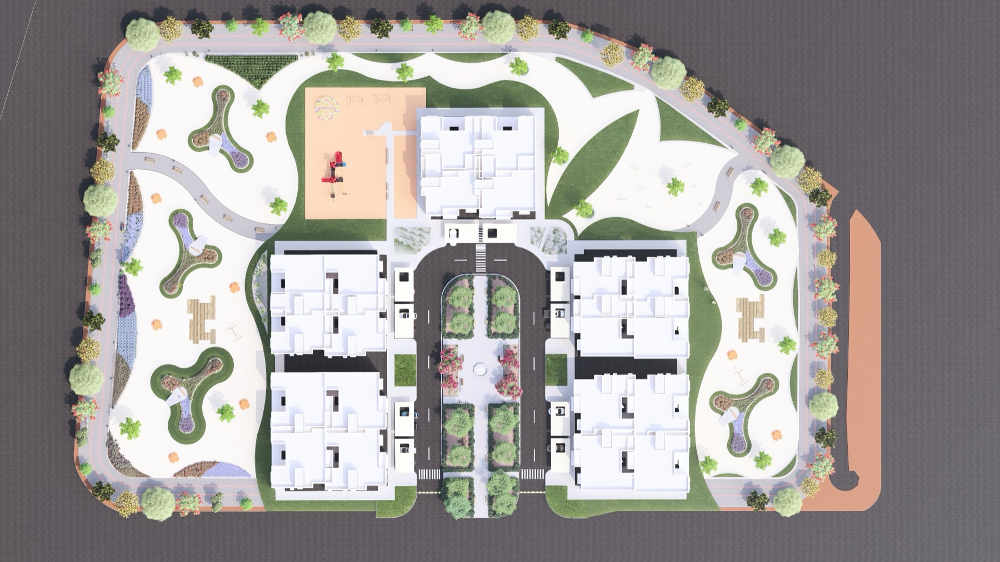
Every square metre started as a landscape masterplan. Drag the slider to compare the working drawing with the rendered scheme.
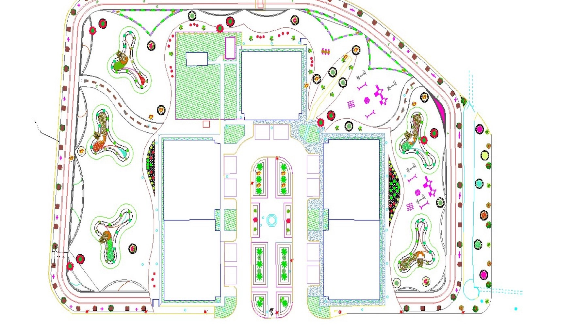
A shaded pedestrian spine linking every block.
Courtyard gardens as green rest nodes.
A children's play area and seating courts.
A continuous walking & running loop.
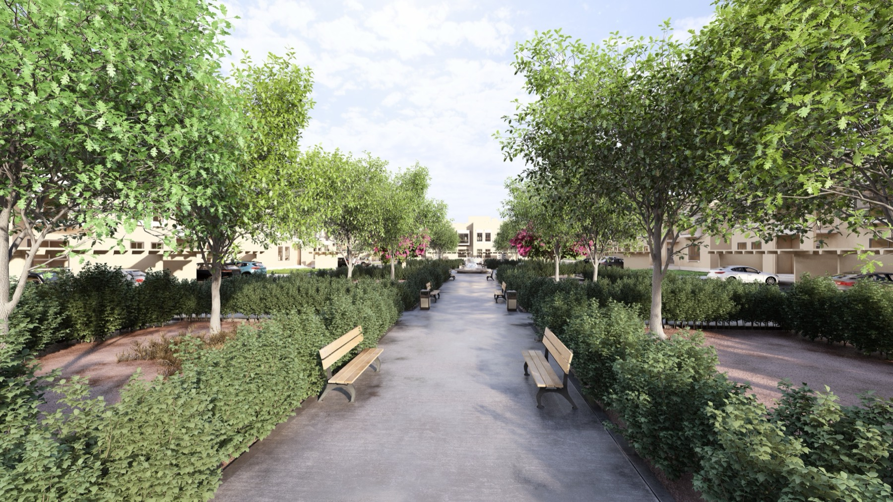
The spineA continuous, planted walk between blocks — shade every step of the way.
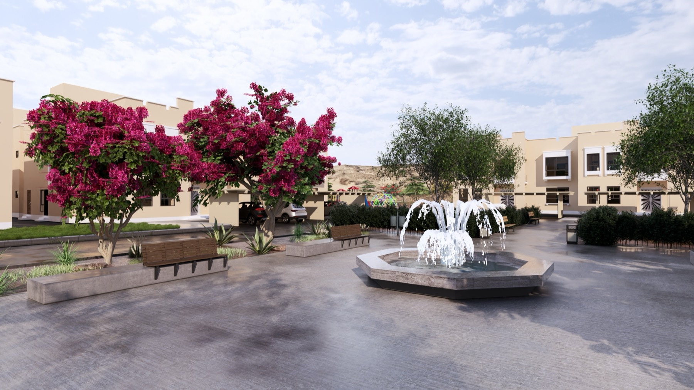
Courtyard gardenBougainvillea, seating and a fountain — a place to breathe.
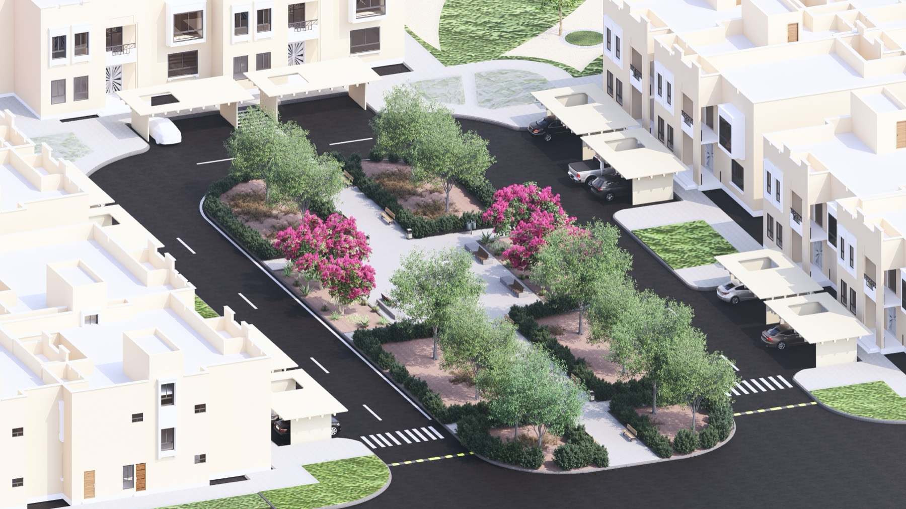
Rest nodesShaded, green pockets sized for families waiting.
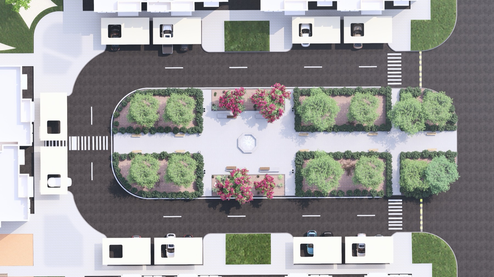
From aboveThe promenade's rhythm of trees, light and seating.
The walkwayA hedge-lined path with benches, shaded by rows of trees.
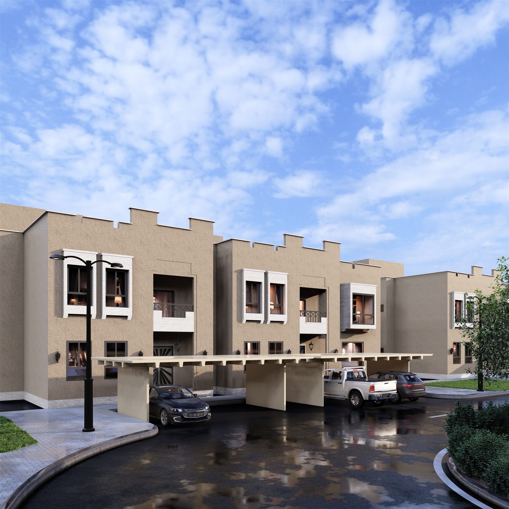
OvercastThe housing block and covered parking under a cloudy sky.
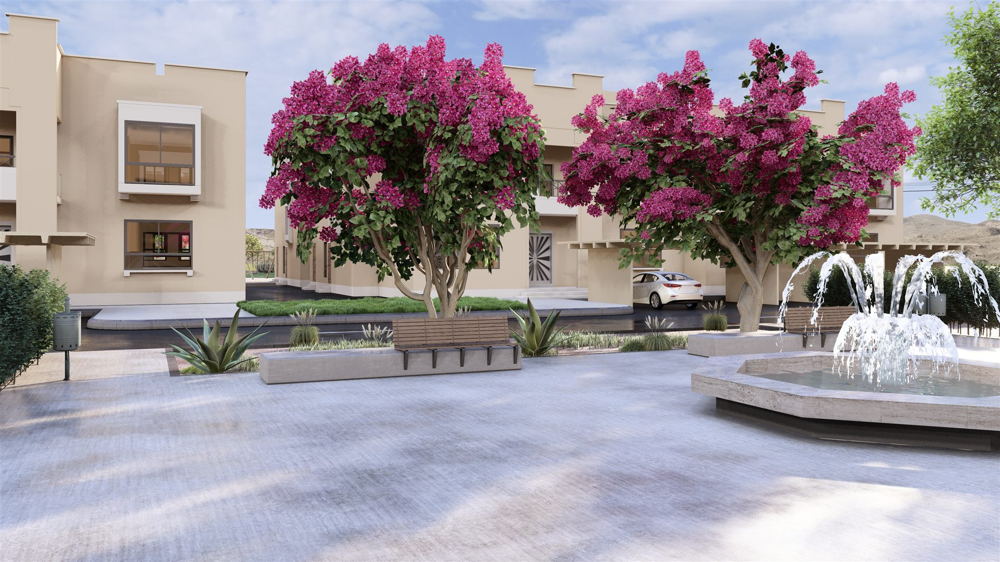
The courtyardFlowering trees and a working fountain, framed by residential blocks.
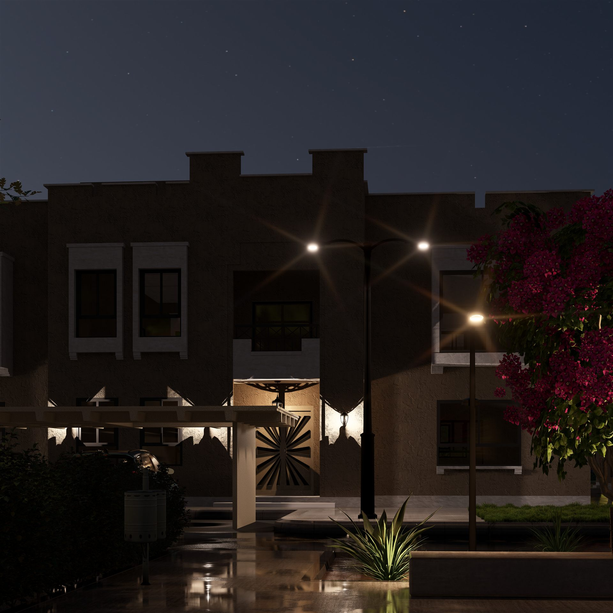
The entryA warmly lit front door, framed by carved timber and bougainvillea.
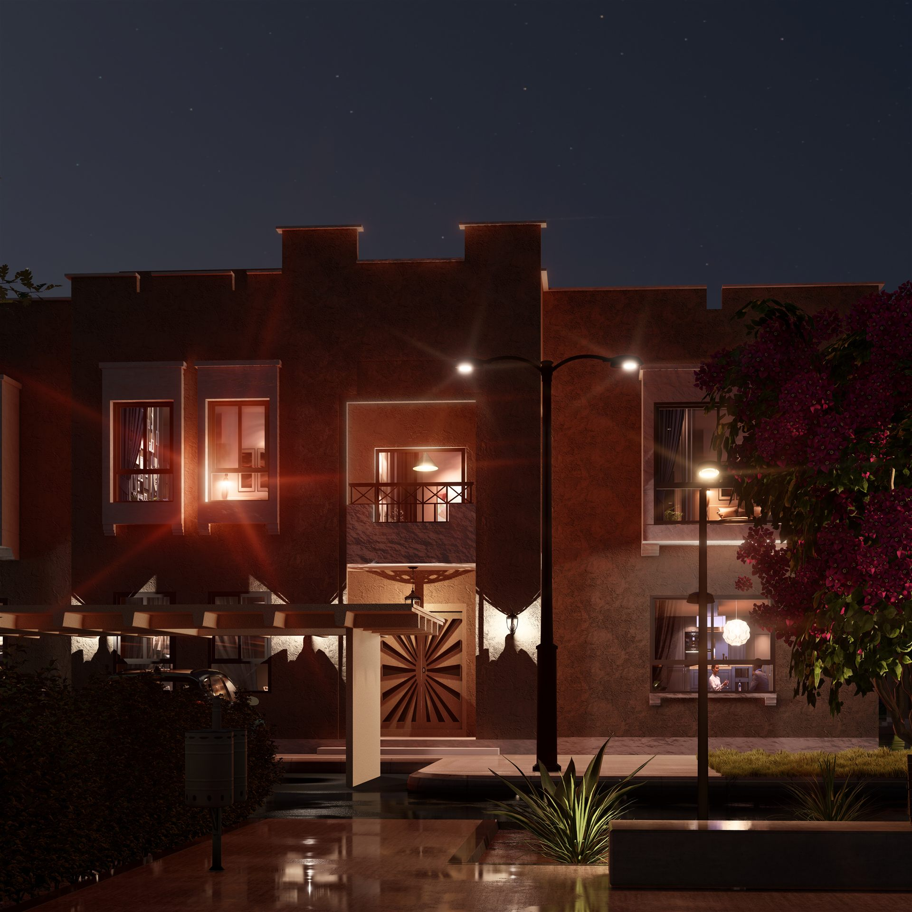
A second entryWarm interior light spills onto the covered porch.
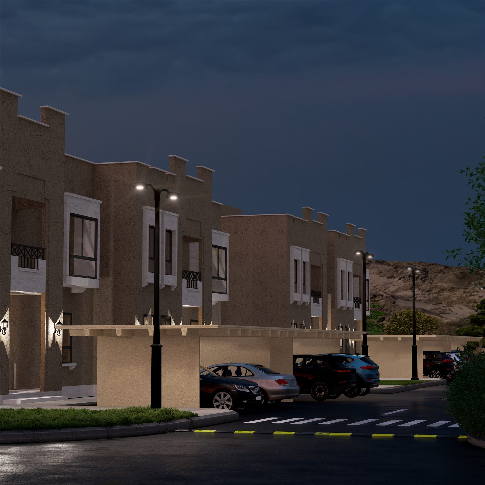
The streetA row of housing blocks, lit along the walkway.
"A hospital's landscape is part of the treatment — shade, greenery and a calm place to walk."